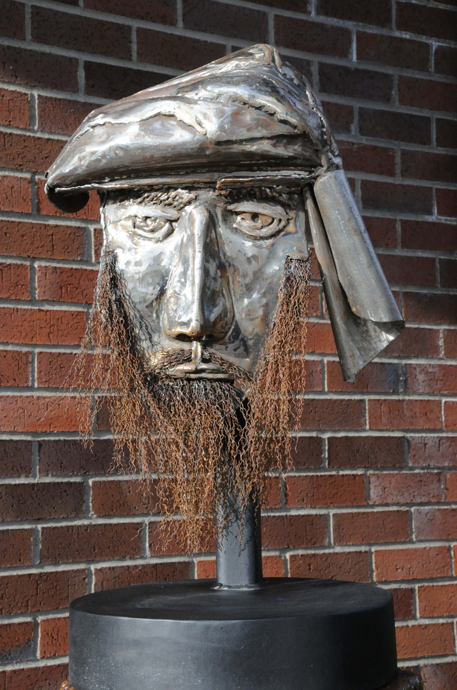

Turban Man
Mild steel · 2009

Human beings tend to fear those different from ourselves and men wearing turbans were certainly villainized in the aftermath of various world events here in the West. This bearded man with a turban was a rather crude effort to show the universality of his humanity and allow us to look unabashedly at him and ourselves.